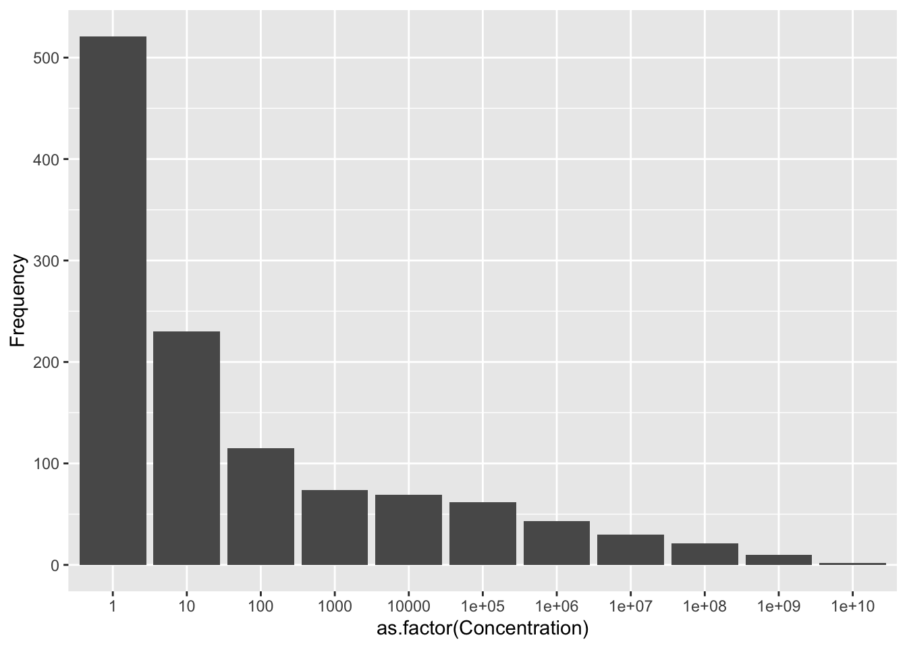
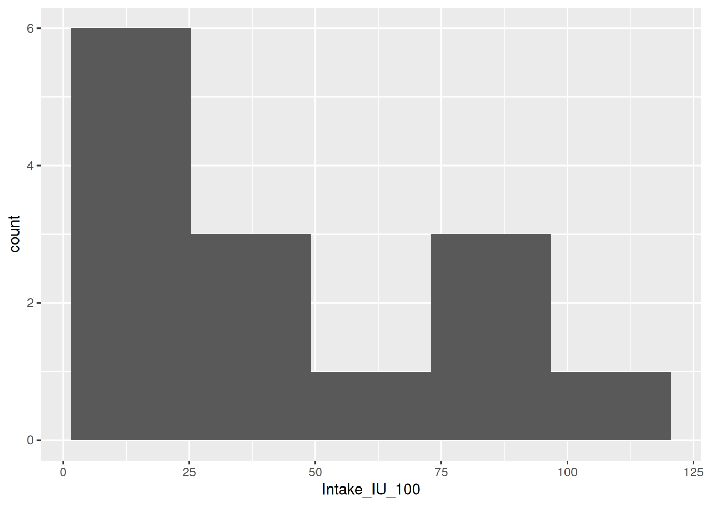

library(tidyverse)
renal <- tibble(
Concentration = 10^(0:10),
Frequency = c(521, 230, 115, 74, 69, 62, 43, 30, 21, 10, 2)
)Chapter 2 Practice Problems
These practice problems mostly come from Rosner’s publicly available study sheet at the books companion website. The solutions are my own, since we differ slightly on what we are looking for in the solutions.
Effect on statistics
Suppose the origin for a data set is changed by adding a constant to each observation.
What is the effect on the median?
It is shifted by the same constant.
What is the effect on the mode?
It is shifted by the same constant.
What is the effect on the arithmetic mean?
It is shifted by the same constant.
What is the effect on the range?
It is unchanged.
Renal Disease
For a study of kidney disease, the following measurements were made on a sample of women working in several factories in Switzerland. They represent concentrations of bacteria in a standard-size urine specimen. High concentrations of these bacteria may indicate possible kidney pathology. The data are presented in the following data frame
| Concentration | Frequency |
|---|---|
| 1e+00 | 521 |
| 1e+01 | 230 |
| 1e+02 | 115 |
| 1e+03 | 74 |
| 1e+04 | 69 |
| 1e+05 | 62 |
| 1e+06 | 43 |
| 1e+07 | 30 |
| 1e+08 | 21 |
| 1e+09 | 10 |
| 1e+10 | 2 |
Here is a barplot
ggplot(renal, aes(x = as.factor(Concentration), y = Frequency)) +
geom_col()
Compute the arithmetic mean for this sample.
By hand:
n <- 521 + 230 + 115 + 74 + 69 + 62 + 43 + 30 + 21 + 10 + 2
sum_x <- (1e0 * 521 + 1e1 * 230 + 1e2 * 115 + 1e3 * 74 + 1e4 * 69 +
1e5 * 62 + 1e6 * 43 + 1e7 * 30 + 1e8 * 21 + 1e9 * 10 + 1e10 * 2)
sum_x / n[1] 27570075Verify using R:
sum(renal$Concentration * renal$Frequency) / sum(renal$Frequency)[1] 27570075Compute the median for this sample.
There are \(n = 1177\) individuals
n[1] 1177This is odd, so we need the \((n + 1) / 2\) = 589th value. This is just 10.
Which do you think is a more appropriate measure of location?
Obviously the median. This is a super skewed distribution.
Cardiovascular Disease
The mortality rates from heart disease (per 100,000 population) for each of the 50 states and the District of Columbia in 1973 are given in descending order in the data frame below.
state_data <- tibble(
State = c("West Virginia", "Pennsylvania", "Maine", "Missouri", "Illinois",
"Florida", "Rhode Island", "Kentucky", "New York", "Iowa",
"Arkansas", "New Jersey", "Massachusetts", "Kansas", "Oklahoma",
"Ohio", "South Dakota", "Wisconsin", "Vermont", "Nebraska",
"Tennessee", "New Hampshire", "Indiana", "North Dakota", "Delaware",
"Mississippi", "Louisiana", "Connecticut", "Oregon", "Washington",
"Minnesota", "Michigan", "Alabama", "North Carolina", "DC",
"South Carolina", "Montana", "Maryland", "Georgia", "Virginia",
"California", "Wyoming", "Texas", "Idaho", "Colorado", "Arizona",
"Nevada", "Utah", "New Mexico", "Hawaii", "Alaska"),
Rate = c(445.4, 442.7, 427.3, 422.9, 420.8, 417.4, 414.4, 407.6, 406.7, 396.9,
396.8, 395.2, 394.0, 391.7, 391.0, 377.7, 376.2, 369.8, 369.2, 368.9,
361.4, 358.2, 356.4, 353.3, 351.6, 351.6, 349.4, 340.3, 338.7, 334.2,
332.7, 330.2, 329.1, 328.4, 327.1, 322.4, 319.1, 315.9, 311.8, 311.2,
310.6, 306.8, 300.6, 297.4, 274.6, 265.4, 236.9, 214.2, 194.0, 169.0,
83.9)
)Consider this data set as a sample of size 51. \[ (X_1, X_2, \ldots, x_{51}) \] If \(\sum_{i=1}^{51}x_i = 17409\) and \(\sum_{i=1}^{51}(x_i - \bar{x})^2 = 249063.65\), then do the following:
Compute the arithmetic mean of this sample.
\[ \sum_{i=1}^{51}x_i / n = 17409 / 51 \]
17409 / 51[1] 341.4Compute the median of this sample.
We need the (51 + 1) / 2 = 26th largest value. You can count, but you’ll end up with Delaware (or Mississippi), whose rate is
median(state_data$Rate)[1] 351.6Compute the standard deviation of this sample.
\[ \sqrt{\frac{1}{n-1}\sum_{i=1}^{51}(x_i - \bar{x})^2} = \sqrt{249063.65 / 50} \]
sqrt(249063.65 / 50)[1] 70.58Verifying in R, we have
sd(state_data$Rate)[1] 70.58The national mortality rate for heart disease in 1973 was 360.8 per 100,000. Why does this figure not correspond to your answer for Problem 2.8?
In 2.8, we calculated the mean rates of the states. The national mortality rate is by person. To get the same number from the state data, we would need to weight by the state population.
Does the differential in raw rates between Florida (417.4) and Georgia (311.8) actually imply that the risk of dying from heart disease is greater in Florida than in Georgia? Why or why not?
No. You need to control for demographic variables. E.g., age of the population.
Nutrition
The data frame below shows the distribution of dietary vitamin-A intake as reported by 14 students who filled out a dietary questionnaire in class. The total intake is a combination of intake from individual food items and from vitamin pills. The units are in IU/100 (International Units/100).
vita <- tibble(
Student_number = 1:14,
Intake_IU_100 = c(31.1, 21.5, 74.7, 95.5, 19.4, 64.8, 108.7,
48.1, 24.4, 13.4, 37.1, 21.3, 78.5, 17.7)
)| Student_number | Intake_IU_100 |
|---|---|
| 1 | 31.1 |
| 2 | 21.5 |
| 3 | 74.7 |
| 4 | 95.5 |
| 5 | 19.4 |
| 6 | 64.8 |
| 7 | 108.7 |
| 8 | 48.1 |
| 9 | 24.4 |
| 10 | 13.4 |
| 11 | 37.1 |
| 12 | 21.3 |
| 13 | 78.5 |
| 14 | 17.7 |
Compute the mean and median from these data.
The mean
sumx <- 31.1 + 21.5 + 74.7 + 95.5 + 19.4 + 64.8 + 108.7 +
48.1 + 24.4 + 13.4 + 37.1 + 21.3 + 78.5 + 17.7
n <- 14
xbar <- sumx / n
xbar[1] 46.87The median is the mean of the 7th and 8th largest observations. Ordering the observations we get \[ 13.4, 17.7, 19.4, 21.3, 21.5, 24.4, 31.1, 37.1, 48.1, 64.8, 74.7, 78.5, 95.5, 108 \] So the median is
(31.1 + 37.1) / 2[1] 34.1We can verify in R
median(vita$Intake_IU_100)[1] 34.1Compute the standard deviation and coefficient of variation from these data.
Sum of the squared values
sumx2 <- 31.1^2 + 21.5^2 + 74.7^2 + 95.5^2 + 19.4^2 + 64.8^2 + 108.7^2 +
48.1^2 + 24.4^2 + 13.4^2 + 37.1^2 + 21.3^2 + 78.5^2 + 17.7^2Since \(\frac{1}{n}\sum (x_i - \bar{x})^2 = \frac{1}{n}\sum x_i^2 - \bar{x}^2\), we get variance is
(sumx2 / n - xbar^2) * n / (n-1)[1] 1012And so the standard deviation is
sqrt(1012)[1] 31.81We can verify in R
sd(vita$Intake_IU_100)[1] 31.81The coefficient of variation is the standard deviation divided by the mean. So
31.8 / 46.9[1] 0.678Suppose the data are expressed in IU rather than IU/100. What are the mean, standard deviation, and coefficient of variation in the new units?
Just multiply the mean and sd by 100.
46.9 * 100 ## mean[1] 469031.8 * 100 ## sd[1] 3180The CV is unchanged.
(31.8 * 100) / (46.9 * 100)[1] 0.678Do you think the mean or median is a more appropriate measure of location for this data set? Here is a histogram
ggplot(vita, aes(x = Intake_IU_100)) +
geom_histogram(bins = 5)
Hard to tell. Maybe the median because of the slight skew? But there is too few data to say for sure.